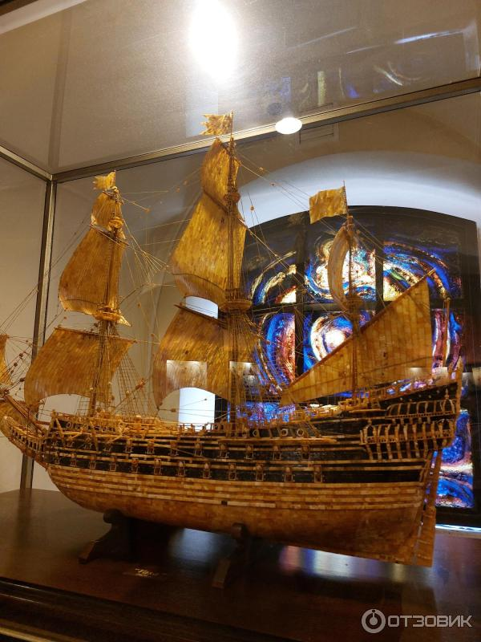
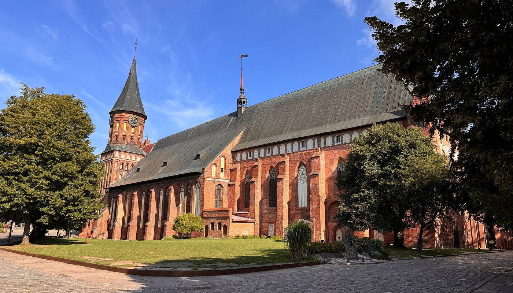
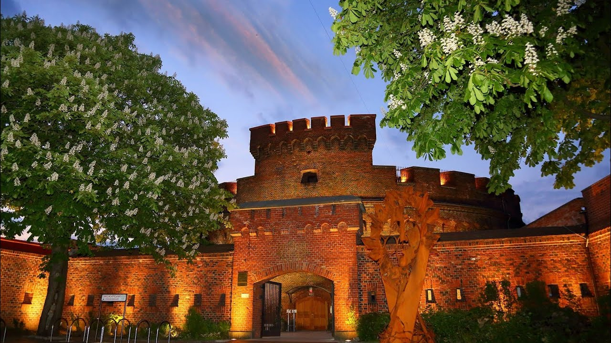
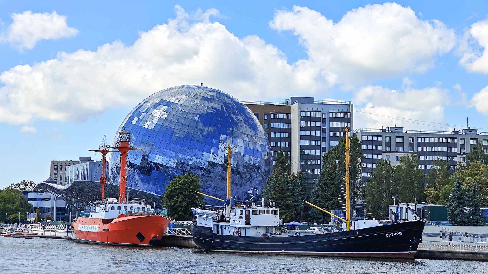
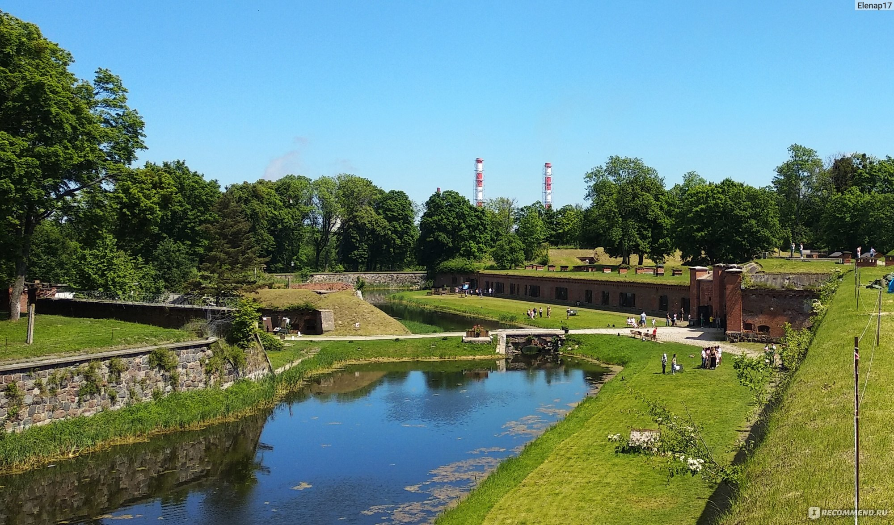

Описание путешествия
Полное погружение в историю и культуру Калининграда — города с богатым прошлым и уникальной атмосферой. Вы увидите главные достопримечательности, познакомитесь с историей Кёнигсберга и ощутите дух Балтики.
Что вас ждёт:
- 🏛️ Обзорная экскурсия по Калининграду: знакомство с основными достопримечательностями города, его историей и архитектурой.
- 🚪 7 ворот Калининграда: осмотр исторических городских ворот, сохранившихся со времён Кёнигсберга. Посещение 1–2 ворот с возможностью зайти внутрь (например, Фридландских или Королевских ворот).
- 💎 Музей янтаря: единственный в России музей, посвящённый этому «солнечному камню». Коллекция включает уникальные экспонаты и изделия из янтаря.
- 🌊 Музей Мирового океана: крупнейший в России комплекс, посвящённый изучению океана. Вы сможете посетить научно‑исследовательские суда, подводную лодку и аквариумы.
- 🏰 Форт № 11: один из фортов оборонительного кольца Кёнигсберга, сохранившийся в хорошем состоянии. Экскурсия по подземным ходам и казематам.
- 🎹 Орган в Кафедральном соборе: возможность услышать звучание одного из лучших органов Европы в историческом здании на острове Канта.
Время путешествия
от 4ч до 7ч
Фотографии маршрута






×